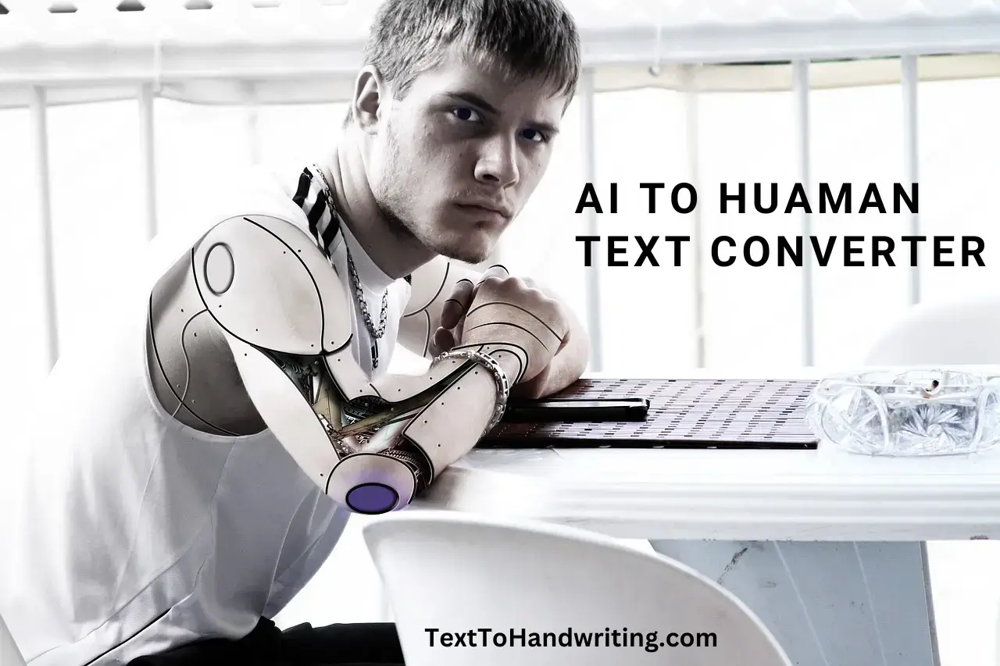
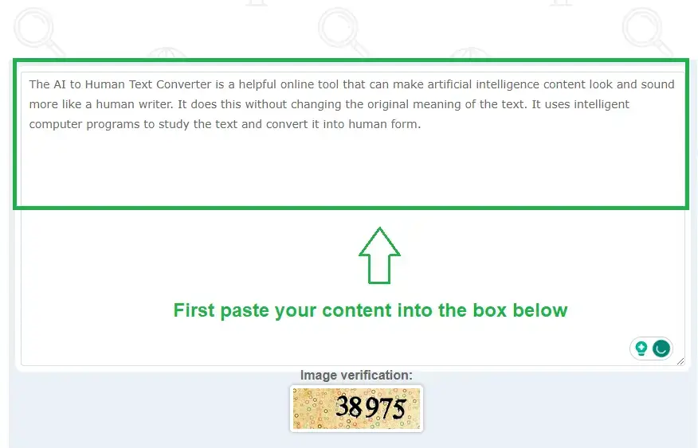
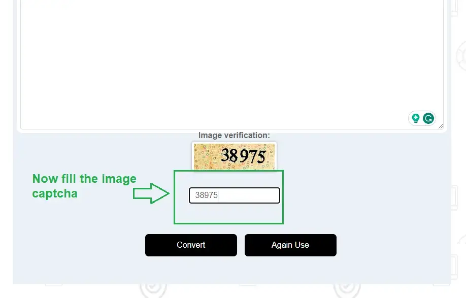
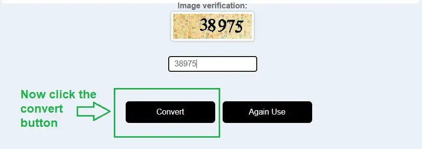
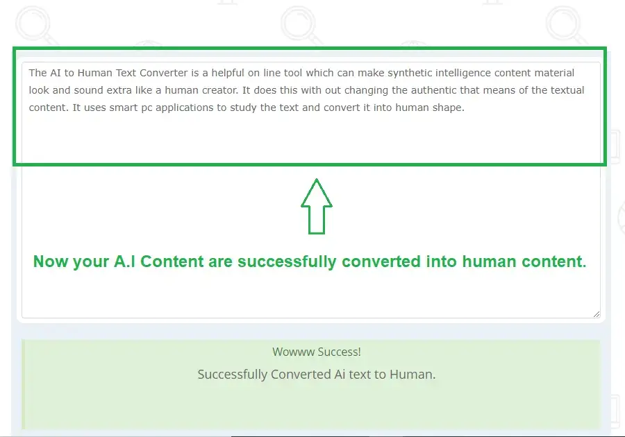

AI To Human Text Converter
The AI to Human Text Converter is a tool you can use online. It helps change content made by machines to content that looks like a person wrote it. The tool doesn't change what the content means. This advanced technology is useful because it can help you avoid being detected by AI tools. This gives you many great advantages in the digital content world. Also, it helps protect your website content and improve its ranking in search engines. Using this tool ensures that Google doesn't give you a penalty since the content looks like it was written by a person.
What does AI to Human Text Converter Do?
AI text converter is an AI tool that helps make computer-generated content sound more human. It takes the text and rewrites it to sound more natural, considering things like tone and sentence structure. Don't worry, though - it won't change the meaning of your text. You can use this technology in many different ways, like writing papers for school, creating content for a website, or even just writing emails. It's accurate, so you can trust that your text will sound great!
How Does AI to Human Text Converter Work?
It's actually pretty cool! These programs use different kinds of computer processes to create or examine text. Let's talk about some of the ways they do it.
Machine Learning
So, when you use an AI text converter, here's what happens: first, you type in the text you want to change. Then, the tool looks at your text and analyzes it using special computer programs that understand things like sentence structure and tone. Next, it rewrites your text by changing some of the words or sentences. It might use different words with the same meaning or change things' order. Finally, when it's all done, you get a new version of your text that sounds more like something a human might say. Cool, right?
Natural Language Processing
So, when you use an AI text converter, it can understand the natural language you use in your text. It does this through something called "NLP." This means the computer looks at things like how you use grammar and the context of your words to figure out what you mean. Then, it uses that information to make changes that sound more like something a human might say. Cool, right?
Features of Our AI Text Converter?
There are lots of great things about AI to Human text converters! Let's look at some of the most important ones, so you know what you're getting into.
1. Simple interface
How can some tools be tough to figure out? Well, our AI text converter is different! We made it super easy to use, so you won't have to spend a long time figuring it out. The interface is simple and user-friendly, so you can quickly change your text the way you want it. No fuss, no hassle!
2. Safe to use and browse
When it comes to text converters, you want to ensure you're using a tool that's easy to navigate and safe to use. That's why we recommend using our AI text converter! Our website is well-secured, so you don't have to worry about safety issues. Plus, we have many other great features that make using our tool a breeze. And when you're using AI tools, safety is always a top priority!
3. Conversion of AI Content to Human Text
One cool thing about our AI text converter is that it can take AI-generated content and make it sound more like something a human wrote. It uses fancy computer algorithms that analyze your content and make changes that make it easier to read and understand. If you have some AI-generated text that doesn't sound right, our converter can help make it more transparent and engaging for your audience.
4. No Limitation to Usage
Remember how we said our AI text converter is straightforward to use? Well, one of the great things about it is that there's no limit to how much content you can convert! This is perfect if you have a lot of text to change and don't want to do it all by hand. Many content creators have switched to using our tool because it's so convenient. Plus, you'll get great results every time!
How to Use Our AI to human text converter?
- First, you visit our website aitohumantextconverter.com
- Then paste your AI Generated content into the box.
- Now Fill the image captcha code.
- Now Click the convert button. That's it.
- Our Ai text converter easily converts your Ai text into human form.
- Enjoy, and you can use many times as you wish.
What Are The Benefits of our AI to human text Converter?
There are lots of great reasons to use our AI text converter! For starters, it's free to use. You can use it as much as you want without ever paying a dime. Plus, there are no limits on how much you can use it, which is convenient. And unlike other AI tools, our converter is fast, reliable, and secure. You can trust that your browsing experience will be smooth and hassle-free.
Now it is your turn to use our AI To Human Text Converter tool
Do you need help to create content? Our AI text converter can assist you without altering the meaning of your text. It maintains the natural tone and sentence structure of your content and is also speedy, saving you time. Input your text into the tool and let it handle the rest!.